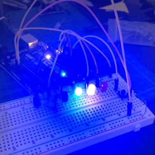
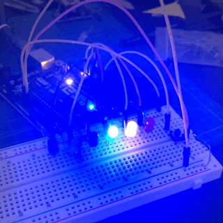

Mr Bookmark
Mr Bookmark is a popup bookmarks. I'm personally interested in the origami. Especially the type of origami which is able to pop up by folding. We can see it variously used in some creative graphic design books.


Conceptualization
Instead of just make this interesting origami exist in the certain graphic design books. I came up with an idea to make it as a bookmarks. So that every times readers open the books they can have this kind of paper based sculpture pop up on the book!
Development
a. Prototypes
At first I decide the direction of folding bookmarks. Since it is too abstract to think about the perspective. I start to make some prototypes to help myself. Then I realized that I want to make the figure face directly to the users. So the book mark need to be fold start from the side of the book. Then I try to add a origami as a figure pop up on the book by folding
b. Sketch
After Trying some origami figure, I tend to give up the idea of making origami as a figure. Because origami itself is thick. If you fold it equally. It will get twice thicker. It is really inconvenient to fold for the users. So I start to try draw a figure by hand on a paper. Then cut it as a plat figure. I want the figure looks funny but not disturb users. Because every time they see it is the time they want to clam down and read book. So I just draw a very simple figure with just line and circle. And I call it Mr Bookmark.
Final
This is how it look like. I also fold a handle at the edges of the bookmarks so that the users can open the book with the book mark easier.
Neon
This is a project combine with Arduino. I'm a begxiner of Arduino. I want to utilize the knowledge I've learned so far to create controllable neon light on the breadboard.
Conceptualization
I just learned about control a single unit of LED on the circuit. I can also control the LED's light pattern by code in Arduino IDE. NEON can be considered as a scheme of LED. And light in a certain programmable pattern. So maybe I can add more LED on the breadboard to make them as a scheme of LED. Then look for some way to control them the light patter of the scheme.

Development
a. Scheme of led
At first, I try to connect three LED with just on pin port. When can get the circuit connect, I just found that didn't work. It seems like the power is not be able to afford three LED at the same time. Then I confirm this assumation by connect just two LED together
Then I decide to connect the LED directly with different pin. That means I need to enable more pin as output in the code and have more resistors with the LED. Then It work!
b. Circuit for switches
I want to have switch to turn on and turn off the scheme of light. Then I need to have an additional pin to receive the sign of switch, so that I can change the state of light scheme accordingly. I decide to us pull down switch to achieve this function. I add a additional helper circuit for the switch.
c. Code
To Control the pattern of LED's light. I wrote a method to give the power from the pin at different time. I use a counter to count the pin to give the power to LED. It start from the highest index of pin to the lower. And I use a flag boolean to decide the direction of light. Each time when the index reach the smallest one or largest one. The flag boolean will flip to the oppsite value. So that the Neon light will be able to go back and forth. Just like that.
 

Final
Finally I make it can be turn on and turn off with switch. Then I also add another method which can change the light patter automatically while the switch is on.
Fragment
This is a visual project achieved by using the particle system in processing. The particle randomly bounce back and forth inside the window. When three particles moving closer enough to each others they can form a semi-transparent panel. Just like a fragment of glasses. The color of the fragments can be changed by clicking.
Conceptualization
I'm watch some awesome processing work produced by particle system. So I want to try to make some by myself. It can also used for the decoration background for my porfolio website. I want to make some random visual effect that has the geometry shape.
Development
a.Pseudocode
It's not a easy task. Several class and method can be involved. To clarify my thoughts. I start with Pseudocode. So that I can have a clear goal for each phases.
b.Particle system
To make a random sack of balls get into the canvas. I make a class called Particle to contain the basic setup information for the balls. Then I decide to give them random position, speed and direction. And fixed radius and maximum value of speed. Besides I also add movement and display method. So that they can appear on the canvas and moving. I decide not to remove the particle. And get fixed number of balls bounce inside the window instead. Because bouncing will make it looks more interesting.

b. Detect neighbors
I would say this is the hardest and the most struggling part of the project. It is easy to detect two balls when they are getting close to each others. So I easily made the bond appear when only two balls's distance is less than 50...

But the problem happens when I try to fill the color. In processing I just found that I can't fill color between lines. I do some research then I found that I need at least 3 balls to form a shape. A triangle to fill in the color. So I need to record my neighbors. And use a nested loop to loop through the current ball and it's neighbors. And the process is still complex. So I Pseudocode again.
Final
Finally, I add a mousepressed function to detect the click action from user to change randomly change the fill color of the fragments. And the final output looks great! Just what I want! I will translate to p5 in the future iteration and try to make it be able to change color by itself.

Budget Tracking app
Today I made a rough draft of a budget controlling application. Users can add the amount of their purchase and track their transaction. Which differentiate it from the bank app or bank statement is that the users can rate if their purchases are impulse purchasing or not and get a report about how many impulse purchase do you have.
Conceptualization
As an international student with limited budget. I always need to track my bill to figure out how many money I spent weekly. In order to have a generally idea of where my money went. However, I found it's so inconvience and time consuming to track transaction from bank statement. Sometimes I always forget a certain transaction and if that is a impulse purchase or not. So I want to make an app to help track my bill.
Development
a.Mind map
I start with drawing a simple mind map to brainstorm about budget control. In order to find out what kind of features I want to have. Finally, I decide to make it be able to have quick access to add how much money you spend, and be able to rate if the purchase is impulse purchase or not
b.flow chart & wireframe
After I pinpoint my features. I start to draw a flow chart to decide the information structure of the application and draw a serise of wireframes to sketch out the typography of buttons
b. Storage transaction
The hardest part of the coding. Since the users need to exit the app for a while and come back to add their purchase amount when the purchase happened. The information should be able to storage for a while. So I'm using the local storage feature in swift. It can set a dictionary to a certain keywords. And pull the data in the local storage down to loop through it.
Final
Since there are so many problem about local storage. I spend a long time solving it. However. I made a workable budget tracking app. Since time is really limited. I will consider add more visual contain and tag for the different context of purchase in the future.
AR Black Dragon
This project is about to deploy a black dragon only when AR camera is detect a certain image or patter. This time I didn't use ARkit which is the one I already used. I try to explore more on Vurforia and Unity. Since it support cross platform of devices and I can say Vurforia is amazing! Simple to use and have powerful AR performance.
Conceptualization
The idea is just come from a mobile game I just played a year ago. It allow you to draw a picture by hand and open your mobile phones camera to scan it. Than it will show up a 3d figure on your painting. It involve the technique to detect certain pattern or image and then deploy the 3d model on it.

Development
a.Vurforia & Unity
I decide to use Vurforia since I just heard a lot of goods word from the people around me. And I just saw so many amazing AR work on it. On the other hand, I have now idea of how to do the thing I want in ARkit! What's more, unity is also helpful when I try to make the 3d model move.
b.Vurforia
I do a lot research on Vurforia. Learn about that it is an AR engine. One of the main feature of it is recognize object like image, cylinder, or even 3d object. Then it can track the target object with camera to deploy AR virtual object accordingly. That is what I need! And It is quiet simple to use! All I need is have an account and upload the image I want to be recognized. And download the packages for unity.


b. Unity
I've used unity to develop the game before. So I'm kind of familiar with it. But I still wonder how to develop an app with it especially how to combine with AR. I download a free dragon model with idle, flying and walking animation.
And put into unity The new knowledge I just learn about here is the crossplatform sling joystick from the standard packages. It is kind like a set of button. It will be added to the front of camera to become the interactive interface in the AR scene. So that users can use the controller to control the AR object.
Final
The finally finished outcome is good. I can scan the drawing to make the AR object appear on the screen and then move the joystick to make the dragon fly and move to different directions.